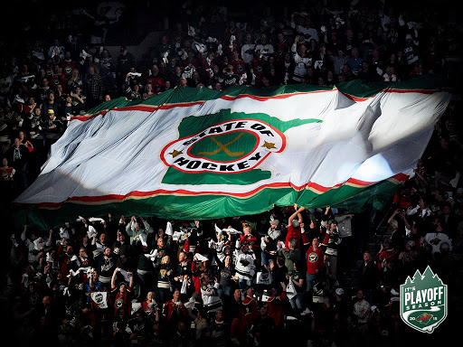
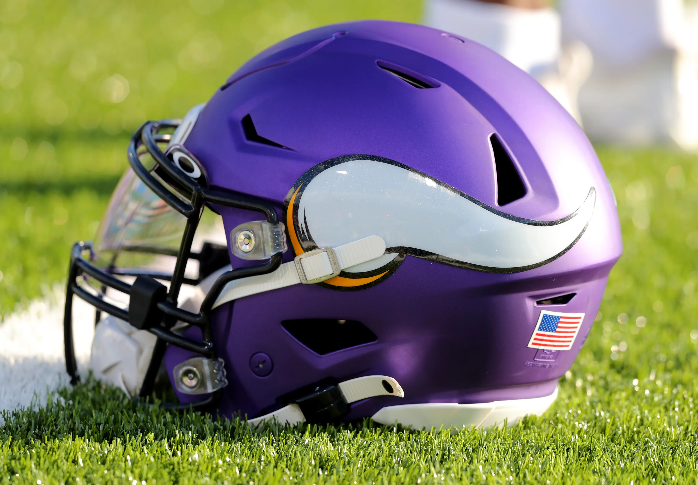
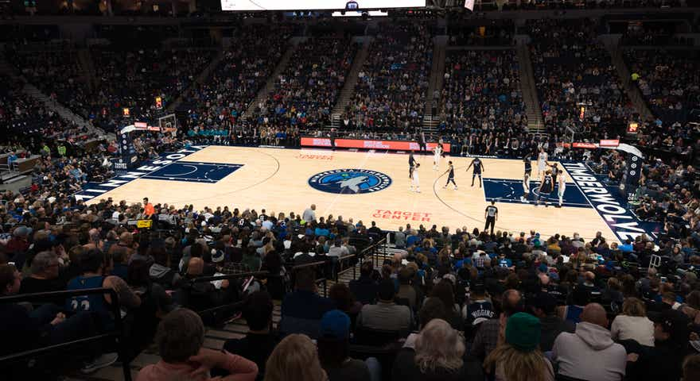
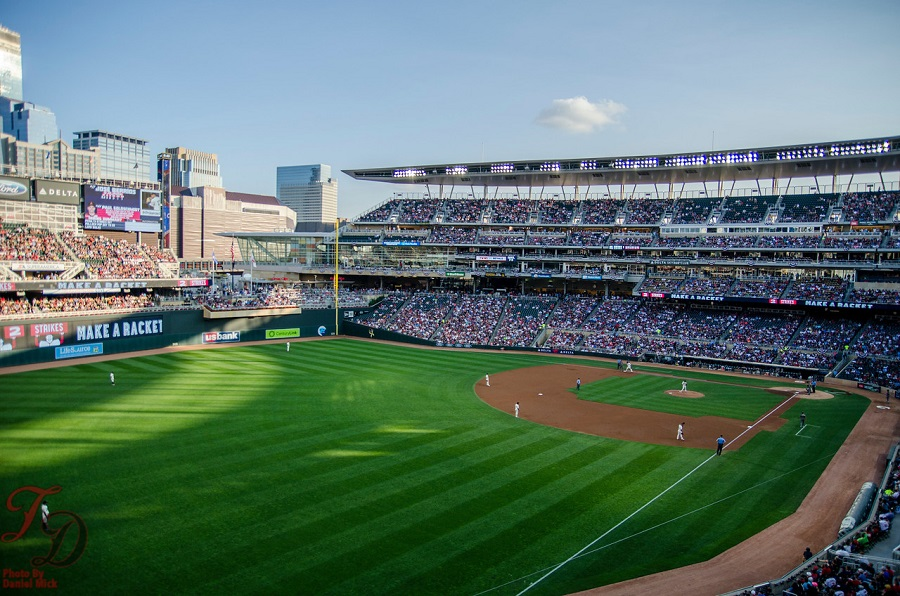

Hockey
Team: Minnesota Wild
Hockey is the biggest sport in Minnesota there's no doubt about that. We're not called the "State of Hockey" for nothing! We have produced more National League Hockey players than any other state in America by far. The next state has 60 less players, Massachusetts. Then Michigan with over 100 less in third. Over 150,000 people go to watch the HIGH SCHOOL hockey tournament every year in the spring, attracting nationwide attention and viewers! Our professional team is the Minnesota Wild and they represent the state of hockey very well. Currently, we look like contenders which is very exciting! Click on the "Wild" tab to find out more!
Football
Team: Minnesota Vikings
Football is another big sport in Minnesota. College football is very popular here given that the Gophers are on the rise as an organization, and the pros are no different. Their new home stadium is used for many high school sports tournaments including the football tournament. It is a giant, one-of-a-kind building with a glass roof. The Vikings are always on Minnesota sports headlines, making trades, signing players, and always having a drama somwhere on the team. Click the "Vikings" tab to learn more!
Basketball
Team: Minnesota Timberwolves
Basketball isn't very big in Minnesota right now, but it's growing. College basketball has always been popular throughout America and it's not all that different here. The Gophers aren't the best but they are begining to get more prominent and beat bigger teams. As for our professional team, The Timberwolves, they are in the middle of a rebuild. However, our young talent are showing signs of improvement. Click the "Timberwolves" tab to learn more!
Baseball
Team: Minnesota Twins
Baseball in Minnesota has always been popular, even when we have had bad seasons. Although, to everyone's delight we are on the rise. After having many losing seasons, we finally made it to the playoffs! Only to lose to the Yankees in the first round for about the 20th time in a row. Currently, there is little reason for optimism surrounding the Twins and we may be entering a rebuild. Click the "Twins" tab to learn more!